Budweiser Case Study
10/12/2019
MSDS 6303: Doing Data Science - Case Study 01
Introduction: The purpose of the project is to present an analysis of the beer industry, then create a decision matrix that assists with chosing an expansion plan based on three options: 1) Buy an current brewery, 2) Build a new brewery, or 3)Expand current production levels. Since our data is based on historical information, we will assume precendent for our future assumption of establishing an “ideal” targeted location to allocate resources for expansion.
##Install and load necessary libraries
library(tidyverse)## -- Attaching packages --------------------------------------------------------------------------------------------------------------- tidyverse 1.2.1 --## v ggplot2 3.2.1 v purrr 0.3.2
## v tibble 2.1.3 v dplyr 0.8.3
## v tidyr 1.0.0 v stringr 1.4.0
## v readr 1.3.1 v forcats 0.4.0## -- Conflicts ------------------------------------------------------------------------------------------------------------------ tidyverse_conflicts() --
## x dplyr::filter() masks stats::filter()
## x dplyr::lag() masks stats::lag()library(readr)
library(dplyr)
library(stringr)
library(DataExplorer)
library(class)
library(caret)## Loading required package: lattice##
## Attaching package: 'caret'## The following object is masked from 'package:purrr':
##
## liftlibrary(maps)##
## Attaching package: 'maps'## The following object is masked from 'package:purrr':
##
## maplibrary(knitr)
library(corrplot)## corrplot 0.84 loaded##Importing the data
Beers <- read_csv("C:/Users/Antonio Debouse/Desktop/Doing Data Science/GitHub/Budweiser-Case-Study/Budweiser Case Study/Beers.csv")## Parsed with column specification:
## cols(
## Name = col_character(),
## Beer_ID = col_double(),
## ABV = col_double(),
## IBU = col_double(),
## Brewery_id = col_double(),
## Style = col_character(),
## Ounces = col_double()
## )str(Beers)## Classes 'spec_tbl_df', 'tbl_df', 'tbl' and 'data.frame': 2410 obs. of 7 variables:
## $ Name : chr "Pub Beer" "Devil's Cup" "Rise of the Phoenix" "Sinister" ...
## $ Beer_ID : num 1436 2265 2264 2263 2262 ...
## $ ABV : num 0.05 0.066 0.071 0.09 0.075 0.077 0.045 0.065 0.055 0.086 ...
## $ IBU : num NA NA NA NA NA NA NA NA NA NA ...
## $ Brewery_id: num 409 178 178 178 178 178 178 178 178 178 ...
## $ Style : chr "American Pale Lager" "American Pale Ale (APA)" "American IPA" "American Double / Imperial IPA" ...
## $ Ounces : num 12 12 12 12 12 12 12 12 12 12 ...
## - attr(*, "spec")=
## .. cols(
## .. Name = col_character(),
## .. Beer_ID = col_double(),
## .. ABV = col_double(),
## .. IBU = col_double(),
## .. Brewery_id = col_double(),
## .. Style = col_character(),
## .. Ounces = col_double()
## .. )view(Beers)
Breweries <- read_csv("C:/Users/Antonio Debouse/Desktop/Doing Data Science/GitHub/Budweiser-Case-Study/Budweiser Case Study/Breweries.csv")## Parsed with column specification:
## cols(
## Brew_ID = col_double(),
## Name = col_character(),
## City = col_character(),
## State = col_character()
## )str(Breweries)## Classes 'spec_tbl_df', 'tbl_df', 'tbl' and 'data.frame': 558 obs. of 4 variables:
## $ Brew_ID: num 1 2 3 4 5 6 7 8 9 10 ...
## $ Name : chr "NorthGate Brewing" "Against the Grain Brewery" "Jack's Abby Craft Lagers" "Mike Hess Brewing Company" ...
## $ City : chr "Minneapolis" "Louisville" "Framingham" "San Diego" ...
## $ State : chr "MN" "KY" "MA" "CA" ...
## - attr(*, "spec")=
## .. cols(
## .. Brew_ID = col_double(),
## .. Name = col_character(),
## .. City = col_character(),
## .. State = col_character()
## .. )view(Breweries)
summary(Breweries)## Brew_ID Name City State
## Min. : 1.0 Length:558 Length:558 Length:558
## 1st Qu.:140.2 Class :character Class :character Class :character
## Median :279.5 Mode :character Mode :character Mode :character
## Mean :279.5
## 3rd Qu.:418.8
## Max. :558.0##Initial Brewery Data Analysis
plot_missing(Breweries)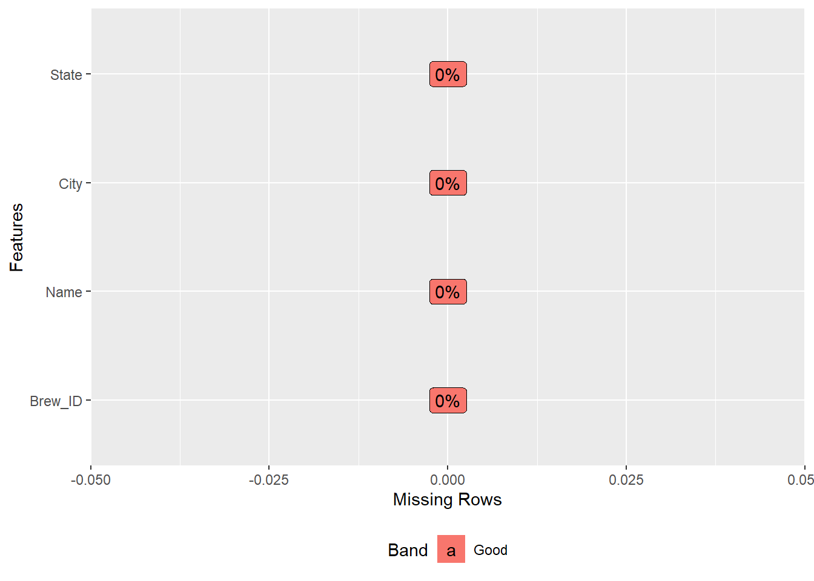
#Questions 1: How many breweries are present in each state?
##Calculate the number of breweries
summary(Breweries$State)## Length Class Mode
## 558 character character#Seperate Brewery count by States
StateCount = count(Breweries,Breweries$State)
##Change "n" to column name "Number of Brewiers in State"
colnames(StateCount)[1]="State_ABV"
colnames(StateCount)[2]="Number of Breweries in State"
str(StateCount)## Classes 'tbl_df', 'tbl' and 'data.frame': 51 obs. of 2 variables:
## $ State_ABV : chr "AK" "AL" "AR" "AZ" ...
## $ Number of Breweries in State: int 7 3 2 11 39 47 8 1 2 15 ...view(StateCount)
##Arrange States in descending order base on number of breweries
arrange(StateCount,desc(StateCount$`Number of Breweries in State`))## # A tibble: 51 x 2
## State_ABV `Number of Breweries in State`
## <chr> <int>
## 1 CO 47
## 2 CA 39
## 3 MI 32
## 4 OR 29
## 5 TX 28
## 6 PA 25
## 7 MA 23
## 8 WA 23
## 9 IN 22
## 10 WI 20
## # ... with 41 more rows##Plot the State count in a bar char
StateCount %>% ggplot(aes(x=`State_ABV`,y=`Number of Breweries in State`,fill=State_ABV))+
geom_bar(stat="identity")+
ggtitle("Total Amount of Breweries in Each State")+
xlab("State")+
ylab("Total Breweries in a State")+
geom_text(aes(State_ABV, StateCount$`Number of Breweries in State` + 2, label = StateCount$`Number of Breweries in State`, fill = NULL))+
theme(axis.text.x = element_text(angle = 90, hjust = 1))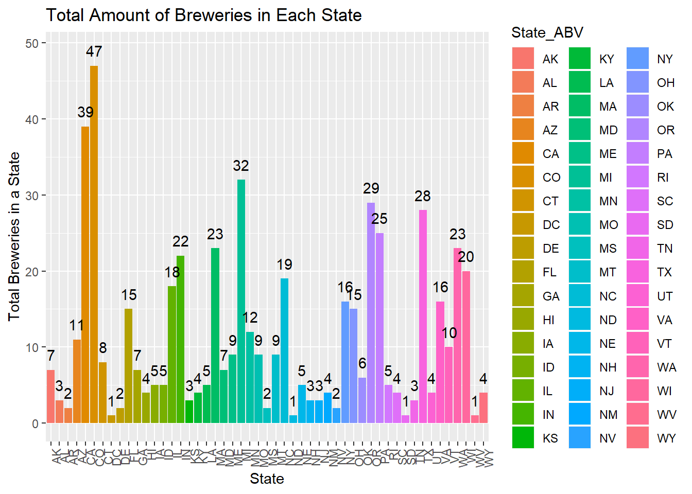
Answer: Acording to our dataset, there are 558 breweries in the US.
#Question 2: Merge beer data with breweries data. Print the first 6 observations and the last six observations to check the merged file
##Merging the two datasets into one using a full join
TotalDataSet <- full_join(Beers,Breweries, by = c("Brewery_id" = "Brew_ID"))
TotalDataSet## # A tibble: 2,410 x 10
## Name.x Beer_ID ABV IBU Brewery_id Style Ounces Name.y City State
## <chr> <dbl> <dbl> <dbl> <dbl> <chr> <dbl> <chr> <chr> <chr>
## 1 Pub Be~ 1436 0.05 NA 409 Ameri~ 12 10 Bar~ Bend OR
## 2 Devil'~ 2265 0.066 NA 178 Ameri~ 12 18th S~ Gary IN
## 3 Rise o~ 2264 0.071 NA 178 Ameri~ 12 18th S~ Gary IN
## 4 Sinist~ 2263 0.09 NA 178 Ameri~ 12 18th S~ Gary IN
## 5 Sex an~ 2262 0.075 NA 178 Ameri~ 12 18th S~ Gary IN
## 6 Black ~ 2261 0.077 NA 178 Oatme~ 12 18th S~ Gary IN
## 7 Lake S~ 2260 0.045 NA 178 Ameri~ 12 18th S~ Gary IN
## 8 Foreman 2259 0.065 NA 178 Ameri~ 12 18th S~ Gary IN
## 9 Jade 2258 0.055 NA 178 Ameri~ 12 18th S~ Gary IN
## 10 Cone C~ 2131 0.086 NA 178 Ameri~ 12 18th S~ Gary IN
## # ... with 2,400 more rowsstr(TotalDataSet)## Classes 'spec_tbl_df', 'tbl_df', 'tbl' and 'data.frame': 2410 obs. of 10 variables:
## $ Name.x : chr "Pub Beer" "Devil's Cup" "Rise of the Phoenix" "Sinister" ...
## $ Beer_ID : num 1436 2265 2264 2263 2262 ...
## $ ABV : num 0.05 0.066 0.071 0.09 0.075 0.077 0.045 0.065 0.055 0.086 ...
## $ IBU : num NA NA NA NA NA NA NA NA NA NA ...
## $ Brewery_id: num 409 178 178 178 178 178 178 178 178 178 ...
## $ Style : chr "American Pale Lager" "American Pale Ale (APA)" "American IPA" "American Double / Imperial IPA" ...
## $ Ounces : num 12 12 12 12 12 12 12 12 12 12 ...
## $ Name.y : chr "10 Barrel Brewing Company" "18th Street Brewery" "18th Street Brewery" "18th Street Brewery" ...
## $ City : chr "Bend" "Gary" "Gary" "Gary" ...
## $ State : chr "OR" "IN" "IN" "IN" ...TotalDataSet$Style = as.factor(TotalDataSet$Style)
##Checking the first and last 6 observations
head(TotalDataSet,n=6)## # A tibble: 6 x 10
## Name.x Beer_ID ABV IBU Brewery_id Style Ounces Name.y City State
## <chr> <dbl> <dbl> <dbl> <dbl> <fct> <dbl> <chr> <chr> <chr>
## 1 Pub Be~ 1436 0.05 NA 409 Americ~ 12 10 Bar~ Bend OR
## 2 Devil'~ 2265 0.066 NA 178 Americ~ 12 18th S~ Gary IN
## 3 Rise o~ 2264 0.071 NA 178 Americ~ 12 18th S~ Gary IN
## 4 Sinist~ 2263 0.09 NA 178 Americ~ 12 18th S~ Gary IN
## 5 Sex an~ 2262 0.075 NA 178 Americ~ 12 18th S~ Gary IN
## 6 Black ~ 2261 0.077 NA 178 Oatmea~ 12 18th S~ Gary INtail(TotalDataSet,n=6)## # A tibble: 6 x 10
## Name.x Beer_ID ABV IBU Brewery_id Style Ounces Name.y City State
## <chr> <dbl> <dbl> <dbl> <dbl> <fct> <dbl> <chr> <chr> <chr>
## 1 Rocky M~ 1035 0.075 NA 425 Ameri~ 12 Wynkoo~ Denv~ CO
## 2 Belgora~ 928 0.067 45 425 Belgi~ 12 Wynkoo~ Denv~ CO
## 3 Rail Ya~ 807 0.052 NA 425 Ameri~ 12 Wynkoo~ Denv~ CO
## 4 B3K Bla~ 620 0.055 NA 425 Schwa~ 12 Wynkoo~ Denv~ CO
## 5 Silverb~ 145 0.055 40 425 Ameri~ 12 Wynkoo~ Denv~ CO
## 6 Rail Ya~ 84 0.052 NA 425 Ameri~ 12 Wynkoo~ Denv~ COAnswer: I used a full_join function to merge the Beer and Brewery data sets.
#Question 3: Address the missing values in each column
##Show name of columns with missing data
names(which(colSums(is.na(TotalDataSet))>0))## [1] "ABV" "IBU" "Style"Answer: The missing values in ABV and IBU will be dropped using na.rm = TRUE equation or I will all the missing values to natural be ignored during aggregation calculations. To perform k-NN classfication models, I will delete all the observations with missing values using the na.omit() function.
#Question 4: Compute the median alcohol content and international bitterness unit for each state. Plot a bar chart to compare.
##Calculation of State median ABVs and IBUs
State_Medians_for_ABV_IBU <- TotalDataSet %>%
group_by(State) %>%
summarize(count=n(),
Median_ABV=median(ABV,na.rm=TRUE),
Median_IBU=median(IBU,na.rm = TRUE))
arrange(State_Medians_for_ABV_IBU,desc(Median_IBU))## # A tibble: 51 x 4
## State count Median_ABV Median_IBU
## <chr> <int> <dbl> <dbl>
## 1 ME 27 0.051 61
## 2 WV 2 0.062 57.5
## 3 FL 58 0.057 55
## 4 GA 16 0.055 55
## 5 DE 2 0.055 52
## 6 NM 14 0.062 51
## 7 NH 8 0.055 48.5
## 8 DC 8 0.0625 47.5
## 9 NY 74 0.055 47
## 10 AK 25 0.056 46
## # ... with 41 more rowsarrange(State_Medians_for_ABV_IBU,desc(Median_ABV))## # A tibble: 51 x 4
## State count Median_ABV Median_IBU
## <chr> <int> <dbl> <dbl>
## 1 DC 8 0.0625 47.5
## 2 KY 21 0.0625 31.5
## 3 MI 162 0.062 35
## 4 NM 14 0.062 51
## 5 WV 2 0.062 57.5
## 6 CO 265 0.0605 40
## 7 AL 10 0.06 43
## 8 CT 27 0.06 29
## 9 NV 11 0.06 41
## 10 OK 19 0.06 35
## # ... with 41 more rows##Bar chart to plot the State median IBUs
State_Medians_for_ABV_IBU %>% ggplot(aes(x=State, y=Median_IBU, fill=State))+
geom_bar(stat = "identity")+
ggtitle("Median IBU of Each State")+
ylab("Median International Bitterness Units of the Beer (IBU)")+
theme(axis.text.x = element_text(angle = 90))## Warning: Removed 1 rows containing missing values (position_stack).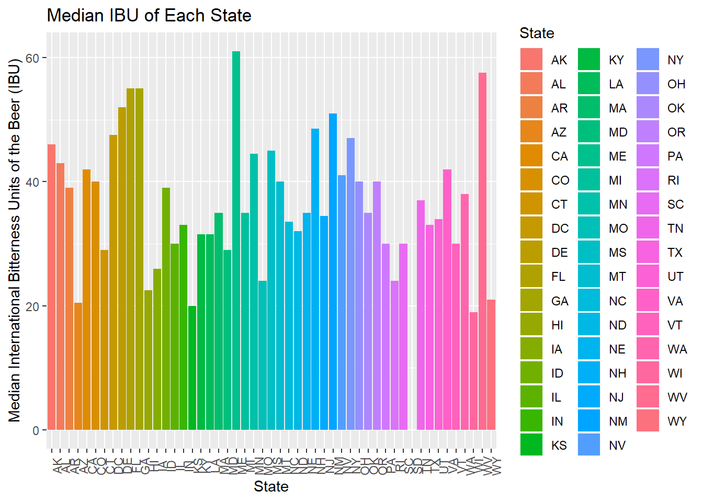
##Bar chart to plot the State median ABV
State_Medians_for_ABV_IBU %>% ggplot(aes(x=State, y=Median_ABV,fill=State))+
geom_bar(stat = "identity")+
ggtitle("Median ABV of Each State")+
ylab("Median International Bitterness Units of the Beer (IBU)")+
theme(axis.text.x = element_text(angle = 90))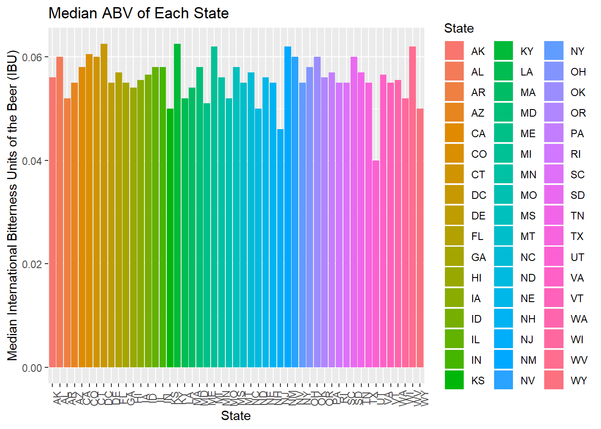
Comment: Based on the barchart visualization, Maine has the highest median IBU followed by West Virginia.
#Question 5: Which state has the maximum alcoholic (ABV) beer? Which State has the most bitter (IBU) beer?
##Use which.max () to find the state with max ABV and IBU
TotalDataSet[which.max(TotalDataSet$ABV),]## # A tibble: 1 x 10
## Name.x Beer_ID ABV IBU Brewery_id Style Ounces Name.y City State
## <chr> <dbl> <dbl> <dbl> <dbl> <fct> <dbl> <chr> <chr> <chr>
## 1 Lee Hill~ 2565 0.128 NA 52 Quadr~ 19.2 Upslo~ Boul~ COTotalDataSet[which.max(TotalDataSet$IBU),]## # A tibble: 1 x 10
## Name.x Beer_ID ABV IBU Brewery_id Style Ounces Name.y City State
## <chr> <dbl> <dbl> <dbl> <dbl> <fct> <dbl> <chr> <chr> <chr>
## 1 Bitter ~ 980 0.082 138 375 Ameri~ 12 Astori~ Asto~ ORTotalDataSet %>% drop_na() %>% ggplot(aes(y=IBU))+geom_boxplot(fill="Red")+
ggtitle("Boxplot of International Bitterness of the Beer (IBU)")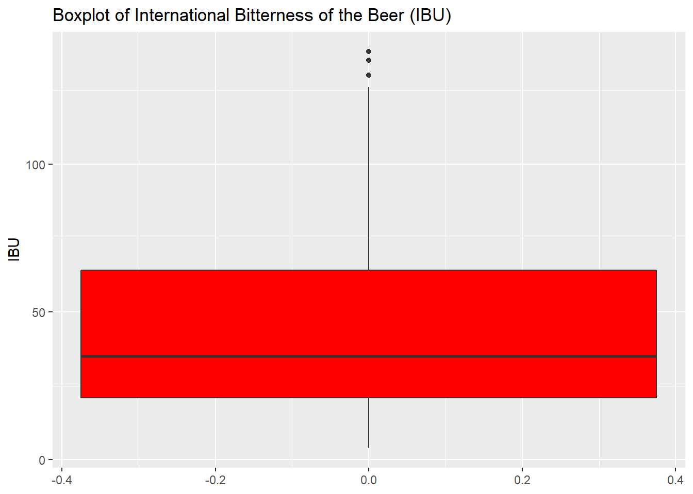
Answer:
Colorado has the beer with the highest ABV content: Lee Hill Series Vol. 5 - Belgian STyle Quadrupel Ale (12.8% ABV) from the Upslope Brewing Company.
Oregon has the beer with the highest IBU content: Bitter Bitch Imperial IPA (IBU of 138) from the Astoria Brewing Company
#Question 6 : Comment on the summary statistics and distribution of the ABV variable.
##View the statistical summary of the ABV column in TotalDataSet
summary(TotalDataSet$ABV,digits = 3)## Min. 1st Qu. Median Mean 3rd Qu. Max. NA's
## 0.0010 0.0500 0.0560 0.0598 0.0670 0.1280 62##View the statistical summary of the IBU column in TotalDataSet
summary(TotalDataSet$IBU, digits = 3)## Min. 1st Qu. Median Mean 3rd Qu. Max. NA's
## 4.0 21.0 35.0 42.7 64.0 138.0 1005##ABV boxplot
TotalDataSet %>% drop_na() %>% ggplot(aes(y=ABV))+geom_boxplot(fill="blue")+
ggtitle("Boxplot of Alcohol by Volume of the Beer (ABV)")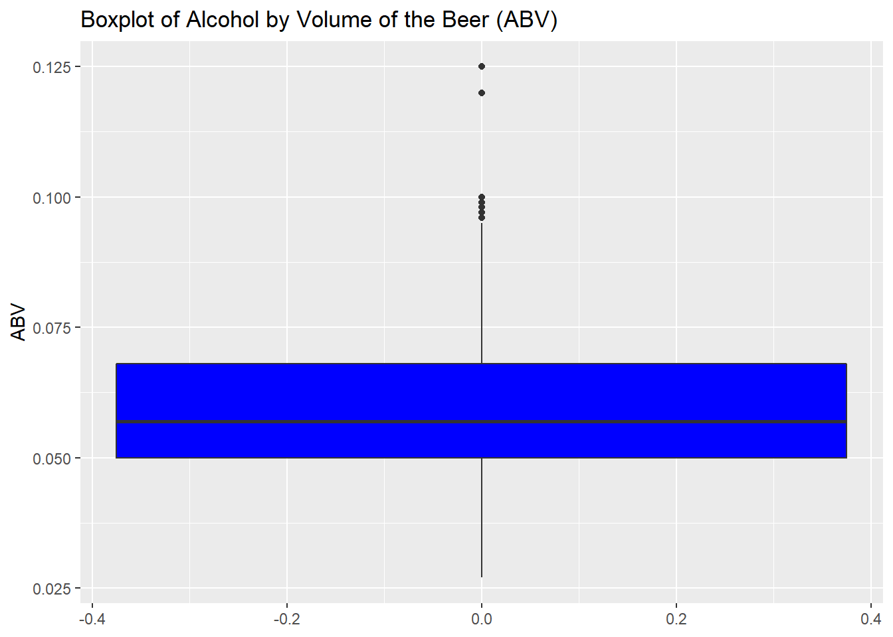
##IBU boxplot
TotalDataSet %>% drop_na() %>% ggplot(aes(y=IBU))+geom_boxplot(fill="Red")+
ggtitle("Boxplot of International Bitterness of the Beer (IBU)")
##ABV histogram of stat summary
TotalDataSet %>% ggplot(aes(x=ABV))+geom_histogram(fill="Red")+
ggtitle("Histogram of Alcohol by Volume of the Beer (ABV)")## `stat_bin()` using `bins = 30`. Pick better value with `binwidth`.## Warning: Removed 62 rows containing non-finite values (stat_bin).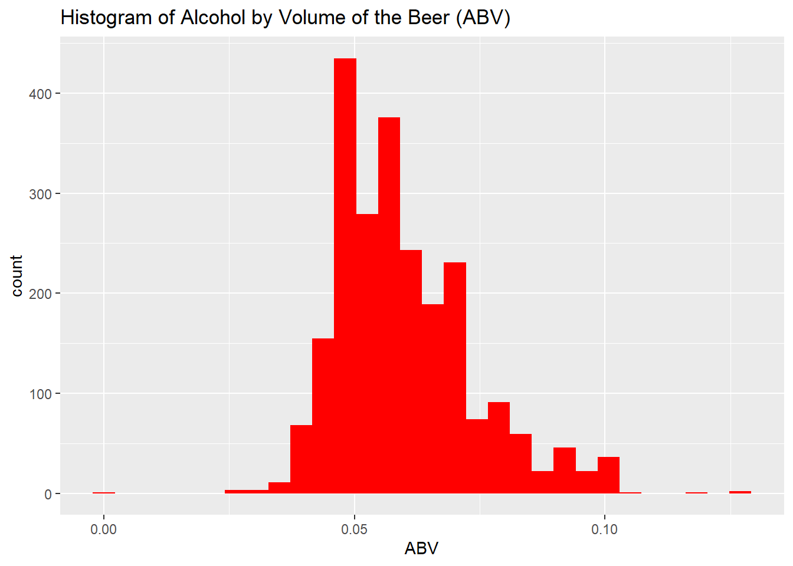
##IBU histogram of stat summary
TotalDataSet %>% ggplot(aes(x=IBU))+geom_histogram(fill="Red")+
ggtitle("Histogram of International Bitterness of the Beer (IBU)")## `stat_bin()` using `bins = 30`. Pick better value with `binwidth`.## Warning: Removed 1005 rows containing non-finite values (stat_bin).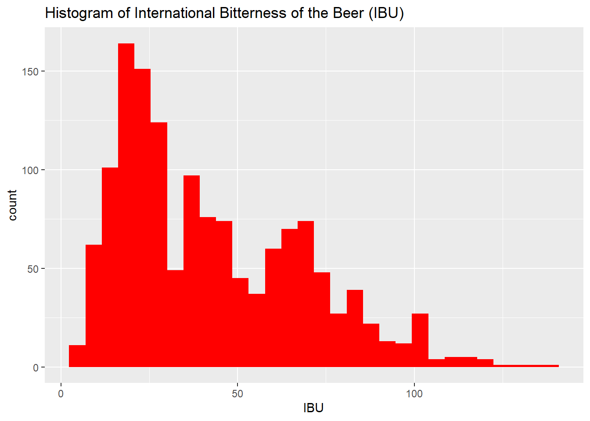
Answer: There appears to be some right-skewness in the ABV distribution based on its histogram, which could be from the influence of higher ABVs on the group’s mean. This is further supported by the large range from the data set; 0.001(min) to 0.128(max) and the mean being greater than the median.
#Question 7: Is there an apparent relationship between the bitterness of the beer and its alcoholic content?
Beers %>% drop_na() %>% ggplot(aes(x=ABV, y=IBU))+
geom_smooth(se=FALSE,color="red")+
ggtitle("ABV to IBU Covariation Analysis")## `geom_smooth()` using method = 'gam' and formula 'y ~ s(x, bs = "cs")'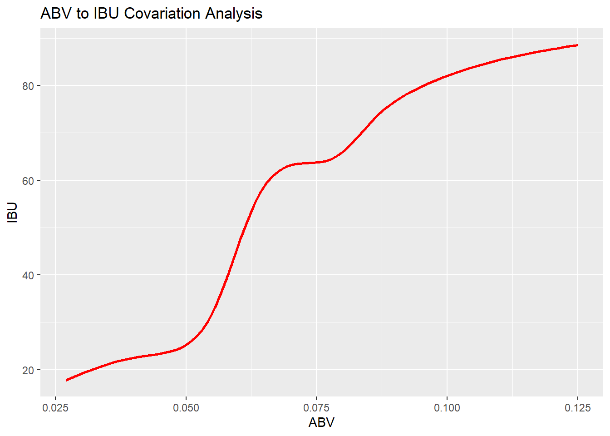
Answer: There appears to be a positive correlation of ABV to IBU (maybe some type of polynomial relationship); an increase in the amount of alcohol in a beer appears to correlate with the beer becoming more bitter.
#Question 8: Budweiser would like to investigative the difference with respect to IBU and ABV between IPAs (India Pale Ales) and other types of Ale (any beer with "Ale" in its name other than IPA)
##Filter TotalDataSet for "Ale" only beer styles to create a Ale only data set
All_Ale <- filter(TotalDataSet, grepl("Ale", Style))
Only_Ale <- filter(All_Ale, !grepl("IPA",Style)) #Removes remaining observations with "IPA" in their style
Only_Ale$Style = "Ale"
##Show statistical summary for Ale only style beers
summary(Only_Ale)## Name.x Beer_ID ABV IBU
## Length:963 Min. : 1.0 Min. :0.03500 Min. : 4.00
## Class :character 1st Qu.: 756.5 1st Qu.:0.05000 1st Qu.: 20.00
## Mode :character Median :1350.0 Median :0.05500 Median : 30.00
## Mean :1378.0 Mean :0.05681 Mean : 34.33
## 3rd Qu.:2053.5 3rd Qu.:0.06000 3rd Qu.: 44.25
## Max. :2690.0 Max. :0.09900 Max. :115.00
## NA's :31 NA's :411
## Brewery_id Style Ounces Name.y
## Min. : 1.0 Length:963 Min. :12.00 Length:963
## 1st Qu.: 93.0 Class :character 1st Qu.:12.00 Class :character
## Median :205.0 Mode :character Median :12.00 Mode :character
## Mean :235.9 Mean :13.47
## 3rd Qu.:369.0 3rd Qu.:16.00
## Max. :558.0 Max. :32.00
##
## City State
## Length:963 Length:963
## Class :character Class :character
## Mode :character Mode :character
##
##
##
## ##Filter to create an "IPA" only data set
IPA <- filter(TotalDataSet, grepl("IPA",Style))
IPA$Style = "IPA"
##Show statistical summary for IPA only style beers
summary(IPA)## Name.x Beer_ID ABV IBU
## Length:571 Min. : 4 Min. :0.02700 Min. : 30.00
## Class :character 1st Qu.: 868 1st Qu.:0.06200 1st Qu.: 60.00
## Mode :character Median :1603 Median :0.06800 Median : 70.00
## Mean :1494 Mean :0.06879 Mean : 71.95
## 3rd Qu.:2089 3rd Qu.:0.07500 3rd Qu.: 85.00
## Max. :2692 Max. :0.09900 Max. :138.00
## NA's :11 NA's :179
## Brewery_id Style Ounces Name.y
## Min. : 1.0 Length:571 Min. :12.00 Length:571
## 1st Qu.: 87.5 Class :character 1st Qu.:12.00 Class :character
## Median :206.0 Mode :character Median :12.00 Mode :character
## Mean :224.8 Mean :13.75
## 3rd Qu.:344.5 3rd Qu.:16.00
## Max. :557.0 Max. :32.00
##
## City State
## Length:571 Length:571
## Class :character Class :character
## Mode :character Mode :character
##
##
##
## ##Combine the IPA and Ale only data sets
IPA_and_Only_Ale_Comb <- rbind(IPA,Only_Ale)
str(IPA_and_Only_Ale_Comb)## Classes 'spec_tbl_df', 'tbl_df', 'tbl' and 'data.frame': 1534 obs. of 10 variables:
## $ Name.x : chr "Rise of the Phoenix" "Sinister" "Sex and Candy" "Cone Crusher" ...
## $ Beer_ID : num 2264 2263 2262 2131 1980 ...
## $ ABV : num 0.071 0.09 0.075 0.086 0.085 0.07 0.07 0.07 0.097 0.07 ...
## $ IBU : num NA NA NA NA NA 70 70 70 94 65 ...
## $ Brewery_id: num 178 178 178 178 178 369 369 369 369 369 ...
## $ Style : chr "IPA" "IPA" "IPA" "IPA" ...
## $ Ounces : num 12 12 12 12 12 12 12 12 12 12 ...
## $ Name.y : chr "18th Street Brewery" "18th Street Brewery" "18th Street Brewery" "18th Street Brewery" ...
## $ City : chr "Gary" "Gary" "Gary" "Gary" ...
## $ State : chr "IN" "IN" "IN" "IN" ...##Delete all missing observations, and rename State column to "STATE_ABBV"
CleanData_IPA_and_Ale <- na.omit(IPA_and_Only_Ale_Comb)
##Change column name to "STATE_ABBV"
colnames(CleanData_IPA_and_Ale)[10] = "STATE_ABBV"
##Scatterplot of Ale's and IPA's relationship between IBU and ABV
CleanData_IPA_and_Ale %>% ggplot(aes(x=ABV, y=IBU, color= Style))+
geom_smooth(aes(linetype = Style),se=FALSE)+
ggtitle("Covariation of IBU and ABV for Ale and IPA Beers Only")## `geom_smooth()` using method = 'loess' and formula 'y ~ x'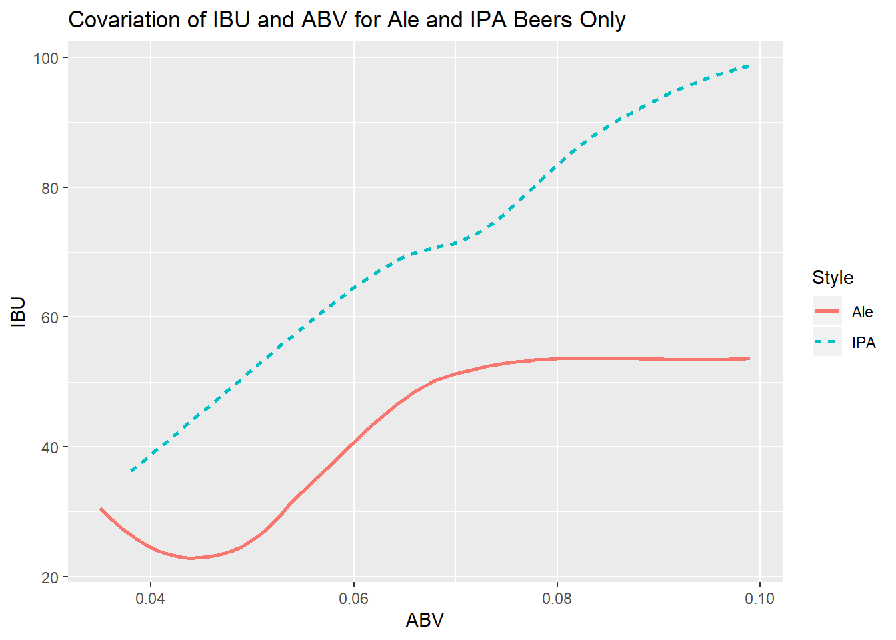
Comment: The same positive correlation also appears in beers that are only “Ale” and “IPA”. The chart shows the visual relationship of IPAs having a higher median ABV of 6.8% and IBU of 70 compared to Ales median ABV of 5.5% and IBU of 30. There are 963 Ales and 571 IPAs in the data set; the two largest “styles” of beer brewed.
#Question 8 (cont.): Budweiser would like to investigative the difference with respect to IBU and ABV between IPAs (India Pale Ales) and other types of Ale (any beer with "Ale" in its name other than IPA)
##Tells the percentage of the dataset that will go into the training set
splitPerc = .75
##Searching for the best k by looping for many k and the average of many training / test partition
iterations = 500
numks = 30
masterAcc = matrix(nrow = iterations, ncol = numks)
for(j in 1:iterations)
{
accs = data.frame(accuracy = numeric(30), k = numeric(30))
trainIndices = sample(1:dim(CleanData_IPA_and_Ale)[1],round(splitPerc * dim(CleanData_IPA_and_Ale)[1]))
train = CleanData_IPA_and_Ale[trainIndices,]
test = CleanData_IPA_and_Ale[-trainIndices,]
for(i in 1:numks)
{
classifications = knn(train[,c(3,4)],test[,c(3,4)],train$Style, prob = TRUE, k = i)
table(classifications,test$Style)
CM = confusionMatrix(table(classifications,test$Style))
masterAcc[j,i] = CM$overall[1]
}
}
MeanAcc = colMeans(masterAcc)
##Plot the outcome
plot(seq(1,numks,1),MeanAcc, type = "l")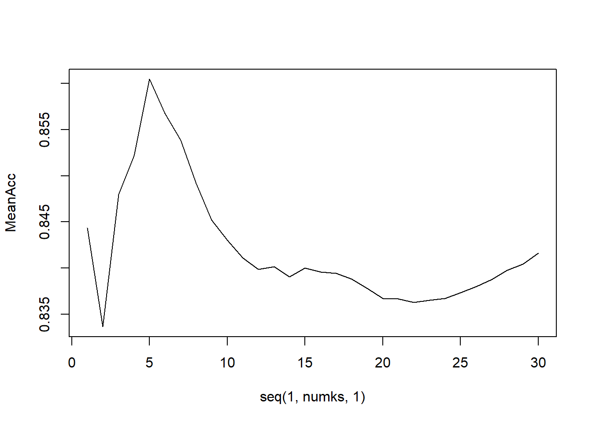
##Standardizing my explanatory variables
Standard_CleanData_IPA_and_Ale <- data.frame(ZABV = scale(CleanData_IPA_and_Ale$ABV),
ZIBU = scale(CleanData_IPA_and_Ale$IBU),
Style = CleanData_IPA_and_Ale$Style)
StandardtrainIndices = sample(1:dim(Standard_CleanData_IPA_and_Ale)[1],round(splitPerc * dim(Standard_CleanData_IPA_and_Ale)[1]))
Standard_train = Standard_CleanData_IPA_and_Ale[StandardtrainIndices,]
Standard_test = Standard_CleanData_IPA_and_Ale[-StandardtrainIndices,]
##External Validation, k=5, unstandardized
classifications = knn(train[,c(3,4)],test[,c(3,4)],train$Style, prob = TRUE, k=5)
table(classifications,test$Style)
confusionMatrix(table(classifications,test$Style))
##External Validation, k=5, Standardized
classifications = knn(Standard_train[,c(1,2)],Standard_test[,c(1,2)],Standard_train$Style, prob = TRUE, k=5)
table(classifications,Standard_test$Style)
confusionMatrix(table(classifications,Standard_test$Style))
##Change Style to a factor
CleanData_IPA_and_Ale$Style=as.factor(CleanData_IPA_and_Ale$Style)
##Internal cross Validation, unstandardized with k=3
classifications = knn.cv(CleanData_IPA_and_Ale[,c(3,4)], CleanData_IPA_and_Ale$Style, k = 3)
data.frame(classifications = classifications, true = CleanData_IPA_and_Ale$Style)
confusionMatrix(classifications,CleanData_IPA_and_Ale$Style)
##Internal cross Validation, standardized with k = 3
classifications = knn.cv(Standard_CleanData_IPA_and_Ale[,c(1,2)],Standard_CleanData_IPA_and_Ale$Style, k=3)
data.frame(classifications = classifications, true = Standard_CleanData_IPA_and_Ale$Style)
confusionMatrix(classifications,Standard_CleanData_IPA_and_Ale$Style)
##Internal cross Validation, unstandardized with k=5
classifications = knn.cv(CleanData_IPA_and_Ale[,c(3,4)], CleanData_IPA_and_Ale$Style, k = 5)
data.frame(classifications = classifications, true = CleanData_IPA_and_Ale$Style)
confusionMatrix(classifications,CleanData_IPA_and_Ale$Style)
##Internal cross Validation, standardized with k = 5
classifications = knn.cv(Standard_CleanData_IPA_and_Ale[,c(1,2)],Standard_CleanData_IPA_and_Ale$Style, k=5)
data.frame(classifications = classifications, true = Standard_CleanData_IPA_and_Ale$Style)
confusionMatrix(classifications,Standard_CleanData_IPA_and_Ale$Style)Comment: Our search for the best k by looping for many k and the average of many training / test partition recommends knn = 5 or 6, we will use 5. From the internal/external, standardized/unstandardized k-NN classification models I ran, the untandardized internal k=5 model delivered the highest accuracy; I was able to accuracy identify an IPA or an Ale with 86.65% accuracy.
#Question 9: Find one other useful inference from the data that Budweiser may be able to find value in.
##Import Household Median Income Data for 2019
PerState_Data <- read.csv("C:/Users/Antonio Debouse/Desktop/Doing Data Science/GitHub/Budweiser-Case-Study/Budweiser Case Study/State Population Data.csv",na=".")
str(PerState_Data)## 'data.frame': 51 obs. of 6 variables:
## $ State : Factor w/ 51 levels "alabama","alaska ",..: 1 2 3 4 5 6 7 8 9 10 ...
## $ STATE_ABV : Factor w/ 51 levels "AK","AL","AR",..: 2 1 4 3 5 6 7 9 8 10 ...
## $ REGION : Factor w/ 6 levels "Midwest","Northeast",..: 4 3 5 4 6 6 2 4 2 4 ...
## $ Population : int 4850771 738565 6809946 2977944 38982847 5436519 3594478 943732 672391 20278447 ...
## $ Med_Household_Inc: int 46472 76114 53510 43813 67169 65458 73781 63036 77649 50883 ...
## $ Beer_Consump : num 28.9 26 26.6 23.7 25.1 28.3 20.2 28.7 NA 26.3 ...PerState_Data$State = as.character(PerState_Data$State)
PerState_Data$STATE_ABV = as.character(PerState_Data$STATE_ABV)
###Beer consumption column is per capita
###Source: U.S. Census Bureau, 2017 American Community Survey and 2017 Puerto Rico Community Surveys.
##Create IPACount and AlCount data
IPACountPerState <- count(IPA,IPA$State)
AleCountPerState <- count(Only_Ale,Only_Ale$State)
##Add IPACount per count State to StateCount data set
countA <- full_join(StateCount,IPACountPerState,by=c("State_ABV"= "IPA$State"))
#Add AleCount per State to StateCount data set
countB <- full_join(countA,AleCountPerState,by=c("State_ABV"="Only_Ale$State"))
##Replace missing values with )
countB[is.na(countB)] <-0
##rename columns
colnames(countB)[3]="IPACount_per_State"
colnames(countB)[4]="AleCount_per_State"
##adding breweries per state to PerState data
Count_PerState_Data <- inner_join(PerState_Data,countB,by=c("STATE_ABV"="State_ABV"))
##Plot correlation matrix
plot_correlation(na.omit(Count_PerState_Data[,c(3:9)]), type = "all",'Review.Date')
#Get the rank of variables based on regions
view(Count_PerState_Data %>% group_by(REGION) %>% summarize(
MedianPopulation = median(Population),
Median_House_Inc = median(Med_Household_Inc),
Median_Beer_Consump = median(Beer_Consump,na.rm = TRUE),
Median_Num_Breweries = sum(`Number of Breweries in State`,na.rm = TRUE)) %>%
mutate(Beer_Consunp_Rank = rank(-Median_Beer_Consump, ties.method = "first"),
PopRank = rank(-MedianPopulation, ties.method = "first"),
House_Inc_Rank = rank(-Median_House_Inc,ties.method = "first"),
Rank_Num_Breweries = rank(-Median_Num_Breweries)))Comment:
If we assume the ideal location for expansion is in a region with one of the highest beer consumptions, then using a correlation model we see the strongest positive relationship to beer consumption is with the Midwest region. The Midwest has the highest median population, the second highest median beer consumption and second most amount of breweries will also having the 4th highest median household income during 2017.
Even though the West region had the most breweries and highest median beer consumption, it was only had the 4th highest median population and third median household income. This lead to hypothesis that real estate and/or breweries would on average be cheaper leading to better value to focus expansion resources; however, further analysis is need to test my assumptions.
#Create a data set to combine all "styles" counts per state to one data frame
##Analysis the number of Styles in the total data set, then chose familar styles as main categories
str(TotalDataSet$Style)## Factor w/ 99 levels "Abbey Single Ale",..: 18 17 15 11 15 79 17 21 17 11 ...##Filter to create an "Cider" only data set
Cider <- filter(TotalDataSet, grepl("Cider",Style))
Cider$Style = "Cider"
##Filter to create an "Stout" only data set
Stout <- filter(TotalDataSet, grepl("Stout",Style))
Stout$Style = "Stout"
##Filter to create an "Stout" only data set
Porter <- filter(TotalDataSet, grepl("Porter",Style))
Porter$Style = "Porter"
##Filter to create an "Lager" only data set
Lager <- filter(TotalDataSet, grepl("Lager",Style))
Lager$Style = "Lager"
##Filter to create an "Lager" only data set
Pilsener <- filter(TotalDataSet, grepl("Pilsener",Style))
Pilsener$Style = "German or Czech Pilsener"
#Filter to create a "Pilsner" only data set
Pilsner <- filter(TotalDataSet, grepl("Pilsner", Style))
Pilsner$Style = "American Pilsner"
#Filter to create "Fruit Beer" only data set
Fruit_Beer <- filter(TotalDataSet, grepl("Fruit", Style))
Fruit_Beer$Style = "Fruity Beer"
##Filter to create an "Other" sytles of beer only data set
Other_Styles <- filter(TotalDataSet, !grepl("Ale",Style),!grepl("IPA",Style),!grepl("Cider", Style),!grepl("Stout", Style),!grepl("Porter",Style),!grepl("Lager",Style), !grepl("Pilsener",Style), !grepl("Pilsner", Style), !grepl("Fruit", Style))
Other_Styles$Style <- "Other Styles"
##Combine all "styles" into one data set
ALL_Styles_Category <- rbind(IPA,Only_Ale,Cider,Stout,Porter,Lager,Pilsener,Pilsner,Fruit_Beer,Other_Styles)
str(ALL_Styles_Category)## Classes 'spec_tbl_df', 'tbl_df', 'tbl' and 'data.frame': 2410 obs. of 10 variables:
## $ Name.x : chr "Rise of the Phoenix" "Sinister" "Sex and Candy" "Cone Crusher" ...
## $ Beer_ID : num 2264 2263 2262 2131 1980 ...
## $ ABV : num 0.071 0.09 0.075 0.086 0.085 0.07 0.07 0.07 0.097 0.07 ...
## $ IBU : num NA NA NA NA NA 70 70 70 94 65 ...
## $ Brewery_id: num 178 178 178 178 178 369 369 369 369 369 ...
## $ Style : chr "IPA" "IPA" "IPA" "IPA" ...
## $ Ounces : num 12 12 12 12 12 12 12 12 12 12 ...
## $ Name.y : chr "18th Street Brewery" "18th Street Brewery" "18th Street Brewery" "18th Street Brewery" ...
## $ City : chr "Gary" "Gary" "Gary" "Gary" ...
## $ State : chr "IN" "IN" "IN" "IN" ...##Change Style and State variables to factors
ALL_Styles_Category$Style = as.factor(ALL_Styles_Category$Style)
ALL_Styles_Category$State = as.factor(ALL_Styles_Category$State)
colnames(ALL_Styles_Category)[1]="Names of Beers"
colnames(ALL_Styles_Category)[8] = "Names of Breweries"
#Plot Barchart with count of beers in each state, fill with style catergories
ALL_Styles_Category %>% ggplot(aes(x=State, fill = Style))+
geom_bar()+ ggtitle("Total Beers Brewed in Each State, Coded by Beer Type")+
xlab("State")+
ylab("Total Beers Brewed in a State")+
theme(axis.text.x = element_text(angle = 90, hjust = 1))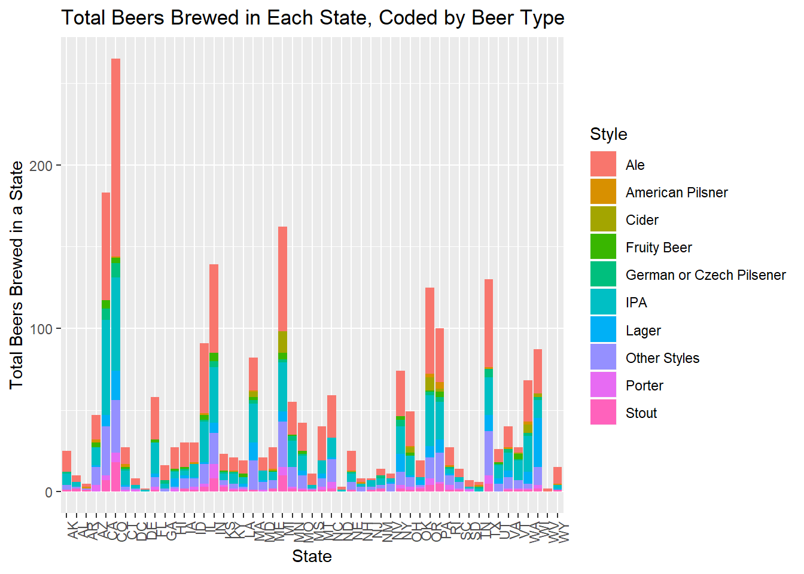
summary(ALL_Styles_Category[,6])## Style
## Ale :963
## IPA :571
## Other Styles:367
## Lager :158
## Stout :100
## Porter : 74
## (Other) :177